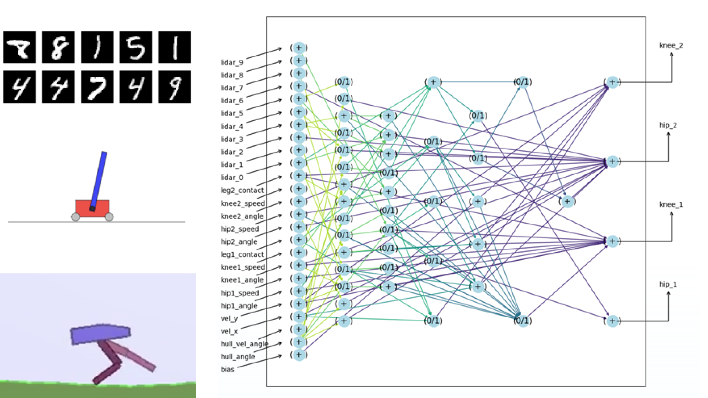
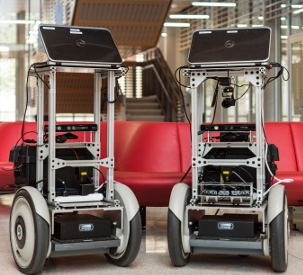
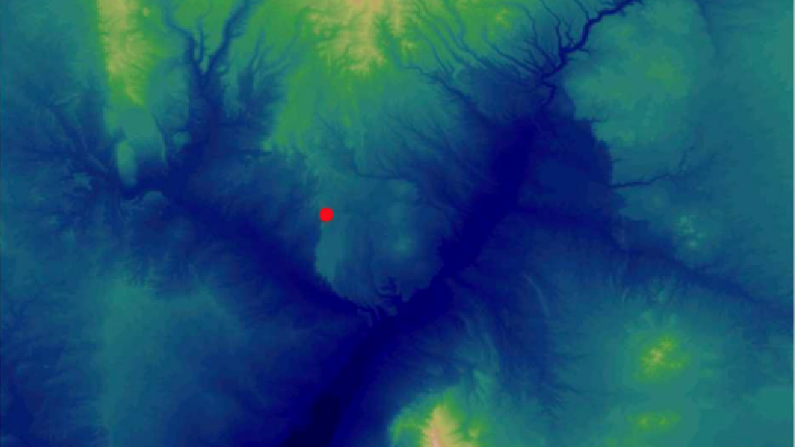
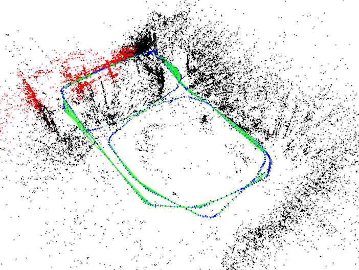
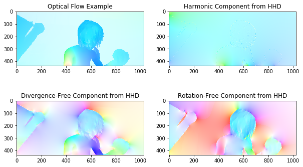
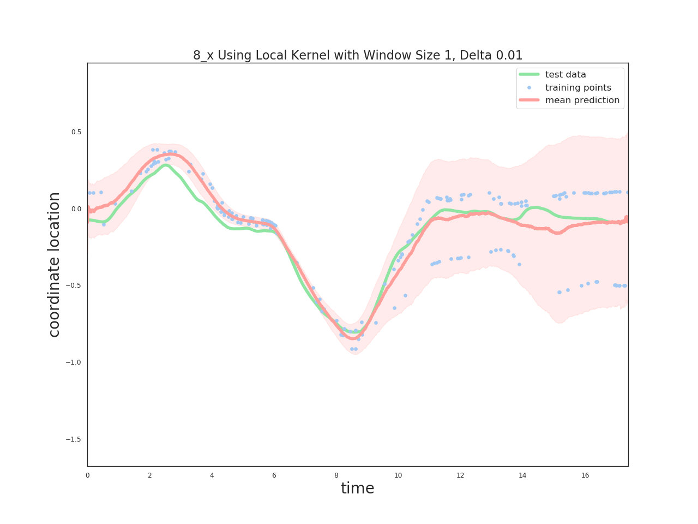

I'm Abrar! I'm a senior in Computer Science at the University of Texas at Austin (Class of 2021)
At UT, I primarily conduct research with the Building-Wide Intelligence Project. Here, I gained experience in robotics, localization, navigation, perception, and manipulation working on various projects over the years.
These last two summers, I have been interning at Sandia National Laboratories, where I have been working with the Neural Exploration and Research Lab. I have worked on brain-inspired navigation and localization, and am currently working on evolving spiking circuit motifs.
| 2020 | |
|---|---|
|  |
Evolving Spiking Circuit Motifs using Weight Agnostic Neural Networks.
Abrar Anwar, Craig Vineyard, William Severa, Srideep Musuvathy, Suma Cardwell International Conference on Neuromorphic Systems. Poster. 2020 Sandia Computer Science Research Institute Summer Proceedings. 2020 (in review) [Technical Report] [Conference Poster] An evolutionary, weight agnostic method is used to generate spiking neural networks used for classification, control, and various other tasks |
|  |
Using Human-Inspired Signals to Disambiguate Navigational Intentions.
Abrar Anwar, Blake Holman, Connor Sheehan, Jeffery Huang UT Undergraduate Research Forum. Poster. April 2020 [Poster] Specific navigational cues are used to study how users interact with various signals on our BWIBots in a hallway scenario. |
| 2019 | |
|  |
BrainSLAM: Robust autonomous navigation in sensor-deprived contexts.
Felix Wang, James B. Aimone, Abrar Anwar, Srideep Musuvathy. [Technical Report] Brain-inspired approaches to navigation and localization are explored in a noisy, data-sparse environment for a hypersonic glide vehicle. Rotation invariant feature representation methods are explored to increase accuracy and reduce map storage. |
|  |
Bounding Box SLAM: A Fast, Selective SLAM.
Abrar Anwar, Blake Holman, Misha Shaposhnikov UT Undergraduate Research Forum. Poster. April 2019 [Poster] [Code] Semantic information is combined with ORB-SLAM in order to reduce drift and localization error in dynamic environments. |
| 2020 | |
|---|---|
|  |
DeepHHD: Learning Helmholtz-Hodge Decomposition to Predict Optical Flow [Report] [Code] In "Geometric Foundations of Machine Learning" course By treating an optical flow estimate as a vector field, we can use a deep neural network to estimate the Helmholtz-Hodge Decomposition, whose sum is the optical flow itself. |
|  |
Detecting Muscle Cocontraction Through Sliding Window Gaussian Processes [Report] [Code] In graduate-level "Machine Learning" course Implemented a Gaussian process (GP) from scratch in order to detect muscle cocontraction in the hyperparameters in a set of sliding window GPs |